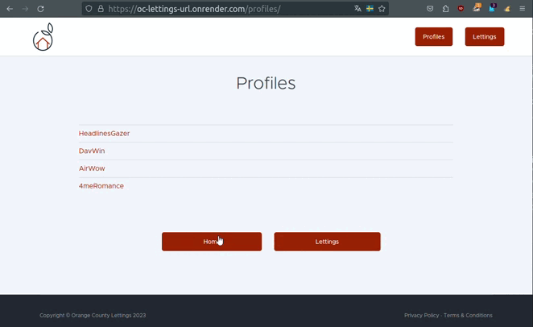

Guide utilisateur :
OC-LETTINGS-SITE est une application Django pour la gestion d’adresses de locations et de profils utilisateurs. Une fois déployée elle est accéssible depuis :
Page Principale : index
Cette page donne accès à deux boutons Lettings et Profiles
Lettings :
L’onglet “Lettings” vous permet de visualiser une liste de locations disponibles.
Vous pouvez voir le titre de chaque location ainsi que son adresse associée.
Vous pouvez cliquer sur une location pour voir plus de détails.
Profiles :
L’onglet “Profiles” vous permet de voir la liste des profils d’utilisateurs.
Chaque profil affiche le nom de l’utilisateur et sa ville préférée.
Vous pouvez cliquer sur un profil pour afficher plus d’informations.
L’onglet back permet de revenir à la page précédentes et home à la page principale
L’interface administrateur :
Une interface administrateur est accessible au super utilisateur déjà crée via l’uri /admin
Username : LGD
Password : …..
Cas d’erreurs :
Une gestion des erreurs 404 et 500 est implémentée pour rediriger l’utilisateur vers un message classique d’erreur.